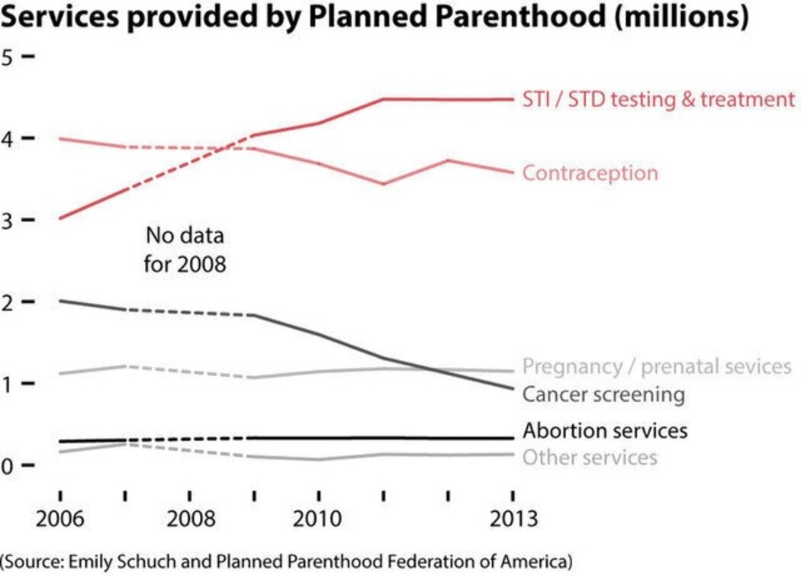

Utilidad y veracidad
Antonio Saade
asaade65@gmail.com
Contenido
- Todos los gráficos mienten, pero algunos son útiles (Parafraseando a George Cox, quien se refería a que todos los modelos matemáticos son erróneos)
- No todas las mentiras son iguales
Objetividad y precisión
- Un gráfico es muy útil para transmitir información de manera sucinta y persuasiva.
- Como los números que los nutren, los gráficos nos parecen objetivos, fríos, precisos, concretos. Mucho más que solo palabras.
O al menos eso es lo que pensamos.
En el mundo real
Los números y los gráficos nos impactan todos los días, y no solamente en las áreas técnicas y académicas.
En ambientes más cotidianos, políticos y publicistas buscan convencernos de las bondades de una nueva política pública, del desempeño de la economía o de las maravillas que puede hacer un dentífrico por nuestra salud bucal.
Para gatos
- 8 de cada 10 gatos prefieren Whiskas
Inflación
- La inflación ha bajado. En el último mes, el INPC alcanzó el 4,32% anualizado (Banco de México)

Calentamiento global
- Las emisiones de CO2 siguen aumentando (New York Times).

¿Los números son objetivos?
Los últimos años están repletos de casos de falsificación escandalosos.
- Diederik Stapel de la U. de Tilburg en Holanda y Bengü Sezen de la U. de Columbia en los EUA falsificaron sus encuestas.
- Elizabeth Holmes echó mano de todo truco disponible para sacar adelante a una empresa (Theranos) que basaba su éxito en una máquina de detección de enfermedades que no funcionaba.
Por cierto
Una sentencia reciente en Chile condenó a la empresa Whiskas por competencia desleal y confirmó que su publicidad no se acompaña por ningún estudio serio y «no se sustenta en antecedentes objetivos y verificables». ¿Será que nadie le preguntó a los gatos? (https://www.lanacion.cl/tribunal-fallo-que-publicidad-8-de-cada-10-gatos-prefieren-whiskas-es-competencia-desleal/)
Cómo mienten los gráficos
Estos casos extremos no son únicos ni se requiere llegar a tanto para engañar o confundir.
Muchas veces basta con mucho menos.
Aquí hay algunos ejemplos.
La escala
Alberto Cairo, How charts lie

Mejor así
Más duplicidades - Cairo
Aquí está de nuevo, corregida
En estas barras falta algo

Ya lo encontramos

En busca del tiempo perdido - Tufte, The visual display of quantitative information

Aún más obvios - Tufte

Las unidades también son escalas
Per cápita


La forma
Tercera dimensión y perspectiva - Tufte

Incluso así es mejor


La perspectiva equivocada - Cairo

Sin palabras

El reparto de las rebanadas - Stephen Few, Show me the numbers

El problema de varias dimensiones

El reparto de las rebanadas (2)

Una serie, una dimensión

El contexto
Información insuficiente - Cairo
Media verdad es una mentira
A veces se necesita más
Un viejo conocido

Contexto, contexto, contexto… Algo familiar, algo emocional


Panel FACTI (ONU). Informe final